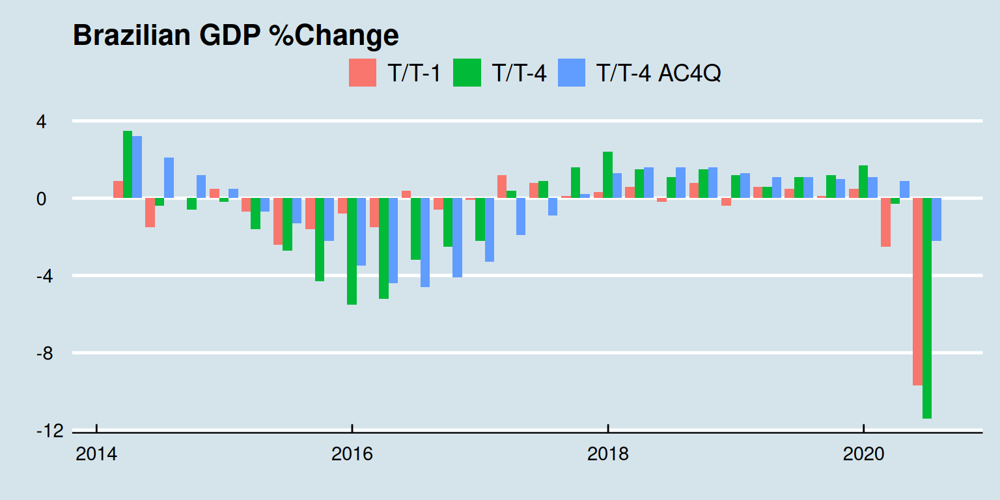
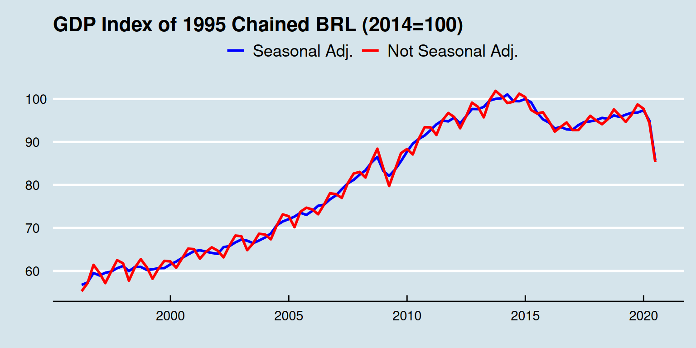
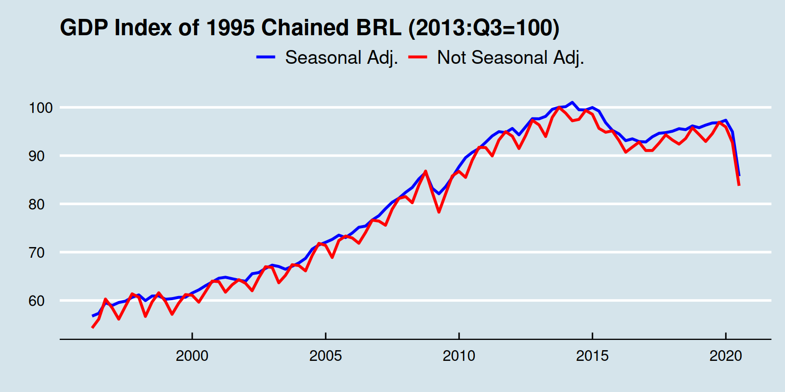

Scraping Brazilian GDP data from the SIDRA-IBGE website
In this post, we will scrape the brazilian gdp data from the SIDRA-IBGE website. Here, I use my own functions (based on other codes) to download the sidra data, but be aware that theres is a CRAN package for that here. My source code for the functions can be found here.
Also, there is another post here that makes a lot of the things we will be doing.
Ok, disclaimers are out of the way. First, let’s load up our functions and other libraries.
# source functions
source("./myfuns.R")
# load libraries
library(dplyr)
library(reshape2)
library(lubridate)
library(dygraphs)
library(ggplot2)
library(ggthemes)The gdp.dl.csv() function, downloads the data from the website and saves a .csv. The gdp.save.levels() and gdp.save.rets() functions load the .csv file, using the paths used in gdp.dl.csv(), transforms the data using the gdp.csv2df() function and saves a data.frame file with the .rds format. I separated the functions that download and trassform the data to avoid connecting to the internet every time I wanted to edit the .csv file. Also, the function df2ts() transforms the data.frame into a ts object because paged_table() and ggplot() do not accept ts objects, whereas dygraphs only accepts time series objects.
# download gdp
gdp.dl.csv()
# transform and save data
gdp.save.levels()
gdp.save.rets()Now, let’s load our data.
# LOAD DATA
# levels
gdp.nominal <- readRDS("../../data/gdp-nominal.rds")
gdp.real.NSA <- readRDS("../../data/gdp-real-NSA.rds")
gdp.real.SA <- readRDS("../../data/gdp-real-SA.rds")
# rets
gdp.ret4 <- readRDS("../../data/gdp-ret4.rds")
gdp.ret1 <- readRDS("../../data/gdp-ret1.rds")
gdp.retsum4 <- readRDS("../../data/gdp-retsum4.rds")
gdp.retyear <- readRDS("../../data/gdp-retyear.rds")
# data as ts (for dygraphs)
gdp.nominal.ts <- df2ts(gdp.nominal)
gdp.real.NSA.ts <- df2ts(gdp.real.NSA)
gdp.real.SA.ts <- df2ts(gdp.real.SA)
gdp.ret4.ts <- df2ts(gdp.ret4)
gdp.ret1.ts <- df2ts(gdp.ret1)
gdp.retsum4.ts <- df2ts(gdp.retsum4)
gdp.retyear.ts <- df2ts(gdp.retyear)
# only GDPs
gdp.df <- data.frame( gdp.nominal[, c(1,2,3)], "nominal"=gdp.nominal[, "GDP"], "real.NSA"=gdp.real.NSA[, "GDP"], "real.SA"=gdp.real.SA[, "GDP"],
"ret1"=gdp.ret1[, "GDP"], "ret4"=gdp.ret4[, "GDP"], "retsum4"=gdp.retsum4[, "GDP"] )
gdp.df$sum4.nomi <- sum4(gdp.df$nominal)
gdp.df$sum4.real <- sum4(gdp.df$real.NSA)
gdp.ts <- df2ts(gdp.df)
# show gdp.df
paged_table(gdp.df)Cool, the data is loaded, let’s make a table with the annual gdp data starting in 2014.
tmp <- filter(gdp.df, date > "2014-01-01" & month(date) == "12" )
mat <- cbind( "Billions of current BRL"=tmp$sum4.nomi/1000, "Billions of 1995 BRL"=tmp$sum4.real/1000, "AC 4Q T/T-4"=tmp$retsum4)
rownames(mat) <- substring( date2qtr(tmp$date), 1, 4)
kable( t( apply( mat, 2, rev) ), digits=2, caption = "GDP by Year")| 2019 | 2018 | 2017 | 2016 | 2015 | 2014 | |
|---|---|---|---|---|---|---|
| Billions of current BRL | 7256.93 | 6889.18 | 6583.32 | 6269.33 | 5995.79 | 5778.95 |
| Billions of 1995 BRL | 1197.66 | 1184.20 | 1168.80 | 1153.54 | 1192.61 | 1236.45 |
| AC 4Q T/T-4 | 1.10 | 1.30 | 1.30 | -3.30 | -3.50 | 0.50 |
Now, let’s make a table with quarterly gdp data starting from 2019.
tmp <- filter(gdp.df, date > "2019-01-01" )
mat <- cbind( "Billions of current BRL"=tmp$nominal/1000, "T/T-1"=tmp$ret1, "T/T-4"=tmp$ret4, "AC 4Q T/T-4"=tmp$retsum4)
rownames(mat) <- date2qtr(tmp$date)
kable( t( apply( mat, 2, rev) ), digits=2, caption = "GDP by Quarter")| 2020:Q2 | 2020:Q1 | 2019:Q4 | 2019:Q3 | 2019:Q2 | 2019:Q1 | |
|---|---|---|---|---|---|---|
| Billions of current BRL | 1652.95 | 1803.42 | 1892.74 | 1842.7 | 1795.81 | 1725.68 |
| T/T-1 | -9.70 | -2.50 | 0.50 | 0.1 | 0.50 | 0.60 |
| T/T-4 | -11.40 | -0.30 | 1.70 | 1.2 | 1.10 | 0.60 |
| AC 4Q T/T-4 | -2.20 | 0.90 | 1.10 | 1.0 | 1.10 | 1.10 |
Tables are ready, let’s graph the GDP percent change for better visualization in ggplot:
gdp.df %>%
filter(date > "2014-01-01") %>%
select(date, ret1, ret4, retsum4) %>%
melt("date") %>%
ggplot( aes( x = date, y = value, fill = variable) ) +
geom_bar( stat="identity", position="dodge" ) +
scale_fill_discrete(name=" ",
breaks=c("ret1", "ret4", "retsum4"),
labels=c("T/T-1", "T/T-4", "T/T-4 AC4Q") ) +
xlab("") + ylab("") +
ggtitle( "Brazilian GDP %Change" ) +
theme( plot.title = element_text(hjust = 0.5, face = "bold" ) ) +
theme_economist()
and interactive version with dygraphs:
tmp <- window(gdp.ts, start=c(2014,1) )
dygraph( tmp[, c("ret1", "ret4", "retsum4") ], main="Brazilian GDP %Change" ) %>%
dySeries("ret1", label = "T/T-1") %>%
dySeries("ret4", label = "T/T-4") %>%
dySeries("retsum4", label = "AC 4Q T/T-4") %>%
dyAxis("x", rangePad = 20, drawGrid = FALSE) %>%
dyBarChart()Now, let’s graph the level of the GDP using the Index of chained 1995 BRL, seasonally adjusted and not seasonally adjusted. In ggplot2:
den.SA <- mean(gdp.df$real.SA[year(gdp.df$date)=="2014"] )
den.NSA <- mean(gdp.df$real.NSA[year(gdp.df$date)=="2014"] )
gdp.df %>%
select(date, real.SA, real.NSA) %>%
mutate(real.SA = 100*real.SA/den.SA, real.NSA = 100*real.NSA/den.NSA ) %>%
melt(id = "date") %>%
ggplot( aes(x = date, y = value) ) +
ggtitle( "GDP Index of 1995 Chained BRL (2014=100)" ) +
geom_line(aes(color = variable), size = 1) +
scale_color_manual(name = "", values = c("blue", "red"), labels=c("Seasonal Adj.", "Not Seasonal Adj." ) ) +
theme( plot.title = element_text(hjust = 0.5, face = "bold" ) ) +
xlab("") + ylab("") +
theme_economist()
And with dygraphs:
tmp <- cbind( "real.SA"=normalize.yr( gdp.ts[, "real.SA"], 2014), "real.NSA"=normalize.yr(gdp.ts[, "real.NSA"], 2014 ) )
dygraph(tmp, main="GDP Index of 1995 Chained BRL (2014=100)" ) %>%
dyAxis("x", rangePad = 10, drawGrid = FALSE) %>%
dyEvent("2002-01-1", "Lula", labelLoc = "bottom") %>%
dyEvent("2010-01-1", "Dilma", labelLoc = "bottom") %>%
dyEvent("2016-09-1", "Temer", labelLoc = "bottom") %>%
dyEvent("2019-01-1", "Bolsonaro", labelLoc = "bottom") %>%
dyEvent("2008-10-1", "Subprime", labelLoc = "bottom", color="red") %>%
dyEvent("2020-03-01", "Corona", labelLoc = "bottom", color="red") %>%
dyLimit( max(tmp), "Peak", labelLoc = "left", color="blue" ) %>%
dySeries("real.NSA", label = "NSA") %>%
dySeries("real.SA", label = "SA")We could (does not mean that we should) also normalize by an specific quarter.
den.SA <- gdp.df$real.SA[gdp.df$date=="2013-09-30"]
den.NSA <- gdp.df$real.NSA[gdp.df$date=="2013-09-30"]
gdp.df %>%
select(date, real.SA, real.NSA) %>%
mutate(real.SA = 100*real.SA/den.SA, real.NSA = 100*real.NSA/den.NSA ) %>%
melt(id = "date") %>%
ggplot( aes(x = date, y = value) ) +
ggtitle( "GDP Index of 1995 Chained BRL (2013:Q3=100)" ) +
geom_line(aes(color = variable), size = 1) +
scale_color_manual(name = "", values = c("blue", "red"), labels=c("Seasonal Adj.", "Not Seasonal Adj." ) ) +
theme( plot.title = element_text(hjust = 0.5, face = "bold" ) ) +
xlab("") + ylab("") +
theme_economist()
tmp <- cbind( "real.SA"=normalize( gdp.ts[, "real.SA"], c(2013, 3)), "real.NSA"=normalize(gdp.ts[, "real.NSA"], c(2013,3) ) )
dygraph(tmp, main="GDP Index of 1995 Chained BRL, (2013:Q3=100)" ) %>%
dyAxis("x", rangePad = 10, drawGrid = FALSE) %>%
dyEvent("2002-01-1", "Lula", labelLoc = "bottom") %>%
dyEvent("2010-01-1", "Dilma", labelLoc = "bottom") %>%
dyEvent("2016-09-1", "Temer", labelLoc = "bottom") %>%
dyEvent("2019-01-1", "Bolsonaro", labelLoc = "bottom") %>%
dyEvent("2008-10-1", "Subprime", labelLoc = "bottom", color="red") %>%
dyEvent("2020-03-01", "Corona", labelLoc = "bottom", color="red") %>%
dyLimit( max(tmp), "Peak", labelLoc = "left", color="blue" ) %>%
dySeries("real.NSA", label = "NSA") %>%
dySeries("real.SA", label = "SA")So that is our little report of the brazilian GDP series.
On future posts I intend to break it up by sectors and components.
Also, we can run the gdp.dl.csv() and the gdp.save.levels() and gdp.save.rets() functions separately on an executable script using cron jobs (more details here) to autmate the scraping part. The rest of the script is completely reusable to automate reporting.
Finally, here we can find out when the next research will be published:
| Reference Date | Publishing Date |
|---|---|
| 2020:Q2 | “2020-09-01” |
| 2020:Q3 | “2020-12-03” |
Stay tuned.
If you see mistakes or want to suggest changes, please create an issue on the source repository.